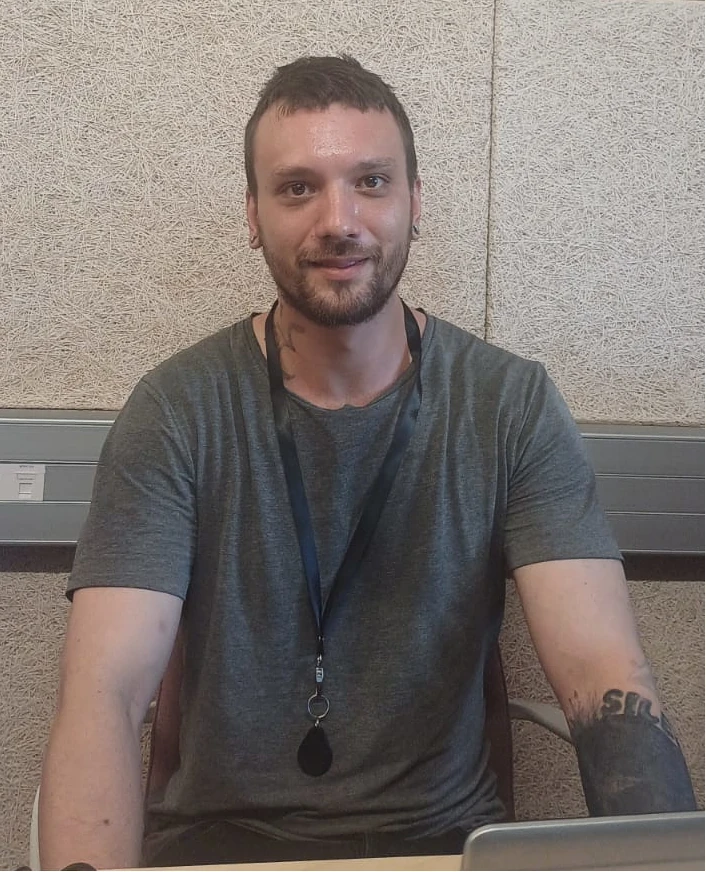
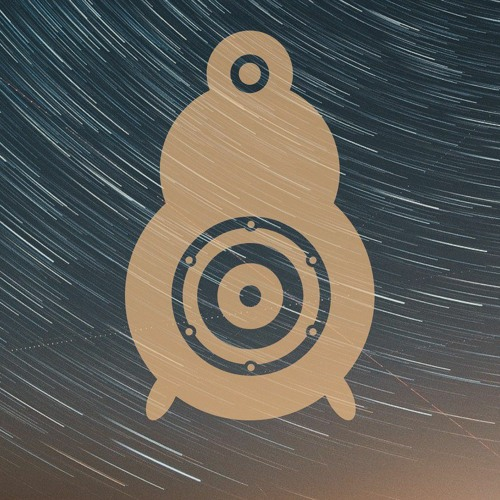

Gabriel Viallard Fortier
32 ans

COORDONNÉES
Développeur Web & Web Mobile
- Mon objectif en me formant est de progresser et de trouver ma place dans un domaine prometteur et passionnant: le monde de la tech.
- Autonomie financière: je recherche un moyen plus efficace que la scène de gagner ma vie en construisant une carrière qui me plait afin de ne plus dépendre des aides de l'État.
- Le développement, c'est un rêve d'enfant qui me permets d'exploiter mon potentiel créatif et de m'épanouir professionnellement.
EXPÉRIENCE PROFESSIONNELLE
- 2012: J'ai travaillé 5 mois à Mc Donald's Caluire
- 2014 - 2016: Je travaille comme régisseur à l'École Nationale de Musique de Villeurbanne et au théâtre Albert Camus à Bron.
- 2017: Je prends du temps pour mon projet personnel et produis de la Musique Assistée par Ordinateur.
- 2019 - 2023: J'ai travaillé comme agent d'entretien et intérimaire et j'obtiens mon permis de conduire.
FORMATION
- 2008: Brevet au collège Bellecombe. J'ai appris beaucoup de choses sur l'informatique: OS, le lua, le C, les types, arrays, pointeurs...
- 2011: Baccaulauréat scientifique au lycée Saint Exupéry.
- 2011-2013: J'essaie les bancs de la fac: médecine, bio, sciences cognitives/anthropologie où j'ai découvert Python. J'ai également voyagé en Éthiopie où j'ai pratiqué l'anglais pendant 6 semaines..
- 2014-2016: BTS technicien de l'audiovisuel option métiers du son pendant deux ans.
- 2025: Formation Bac+2 - Développeur Web & Web mobile à LA PLATEFORME à Lyon.
COMPÉTENCES
- Très bonne maîtrise d'un environnement linux
- Alerte aux recommendations de sécurité ANSII
- Développement de site simples et statiques
- Création de bases de données SQL
QUALITÉS
- Autonome, déterminé
- Ponctuel, assidu, curieux
- Social et ouvert d'esprit
- Réactif, créatif, adpatatif
TECHNOLOGIES
- HTML / CSS
- PHP 8.4
- Github
- Plesk
Passionné par le graphisme, la musique électronique, les voyages et la moto, je pratique depuis toujours chaque activité qui se propose à moi avec entrain et bonne humeur, toujours prêt à explorer de nouveaux horizons, de nouvelles saveurs, à relever les défis et à apprendre de mes erreurs.
Soundcloud | Youtube | LinkedIn | Portefolio